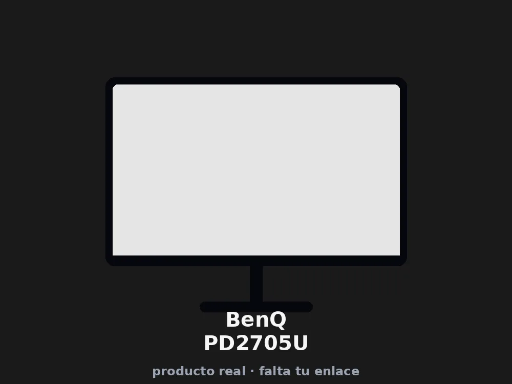

BenQ
BenQ PD2705U
Valoración del editor
Puntuaciones editoriales de 0 a 10, calculadas a partir de las especificaciones y comparables entre todos los monitores de esta web — no son una afirmación del fabricante.
Ficha técnica completa
| Pantalla | |
| Tipo de panel | IPS |
|---|---|
| Tamaño de pantalla | 27" |
| Resolución | 4K |
| Curvo | No |
| Curvatura | — |
| Brillo | — |
| HDR | — |
| Rendimiento gaming | |
| Tasa de refresco | 120 Hz |
| Tiempo de respuesta (GtG) | 5 ms |
| Tecnología de sincronización | FreeSync |
| Ergonomía y construcción | |
| Ajuste de altura | Sí |
| Pivote (modo retrato) | Sí |
| Peso | 9,3 kg |
| Garantía | 2 años |
Otros datos
Nuestra opinión
El PD2705U cubre el 99% de los espacios sRGB y Rec.709 con una precisión de color ΔE≤3 según BenQ, gracias a su tecnología AQCOLOR — la diferencia frente a un 4K genérico se nota en que los colores salen de fábrica ya calibrados, con informe de calibración incluido en la caja.
El puerto USB-C entrega hasta 65W de carga mientras transporta vídeo y datos por un solo cable, y el conmutador KVM integrado permite controlar dos ordenadores con un mismo teclado y ratón — pensado explícitamente para puestos de trabajo creativos, con muy buena acogida entre usuarios de MacBook según las reseñas.
Varios compradores son claros en un punto: no es un monitor para gaming. Aunque admite FreeSync, la imagen es "plana" y sin mucho contraste — estupendo para diseño y fotografía, no para partidas rápidas.
- Colores calibrados de fábrica (99% sRGB/Rec.709)
- USB-C con 65W de carga y KVM integrado
- Soporte con ajuste de altura
- No pensado para gaming (sin sincronización adaptativa)
- Precio elevado frente a un 4K genérico sin calibrar
Ideal para: Diseñadores, fotógrafos y editores de vídeo que necesitan color fiable y un único cable para el portátil.
Qué dicen los compradores
Cerca de 1.000 valoraciones con 4,5 estrellas de media destacan la precisión de color de fábrica y la comodidad de la carga por USB-C.
★★★★★
fotografiasdelalmadesnuda — La calidad de imagen es sencillamente genial: pantalla mate, bien calibrado, con varios modos de imagen según la tarea. Uso principalmente para edición de fotografía con Lightroom y Photoshop y me encanta la fidelidad de los colores.
★★★★★
Its blad — Lo compré para edición de vídeo y foto y van muy bien, con USB-C que carga el portátil de forma continua. Eso sí: no está pensado para jugar, la imagen es "flat" y no tiene mucho contraste — para trabajo profesional es muy bueno.
★★★★
Ruben I. — Calidad de fabricación notable, imagen 4K nítida y buena reproducción de color. Podría beneficiarse de algo más de brillo en entornos muy luminosos.
★★★★★
Roland — Muy buena relación calidad-precio, fácil de instalar, muchas opciones de conexión. Pensado para trabajo de diseño y edición de imagen, no como monitor de gaming.
Resumen basado en las reseñas visibles en Amazon en el momento de la captura.
ScreenScope participa en el Programa de Afiliados de Amazon EU. Como afiliados, obtenemos ingresos por las compras que cumplen los requisitos aplicables, sin coste adicional para ti.